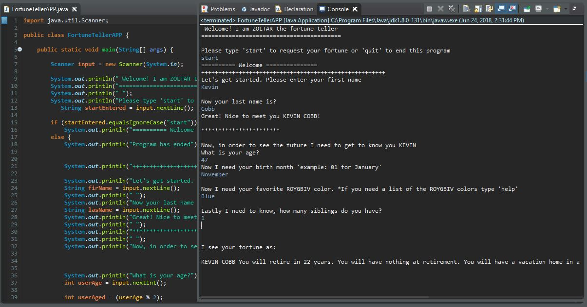
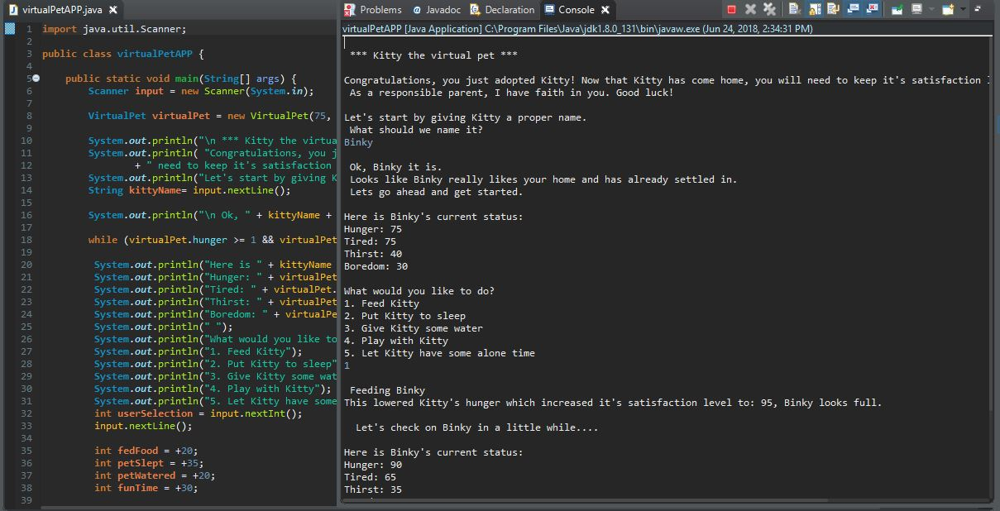
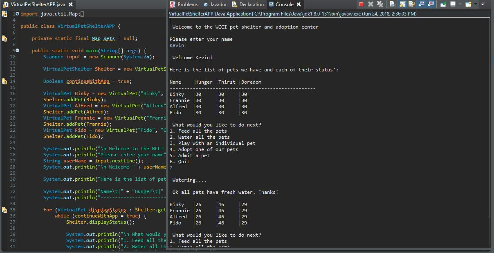
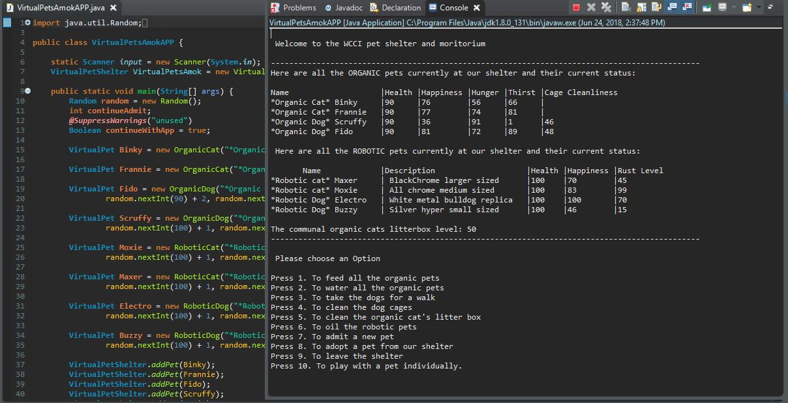
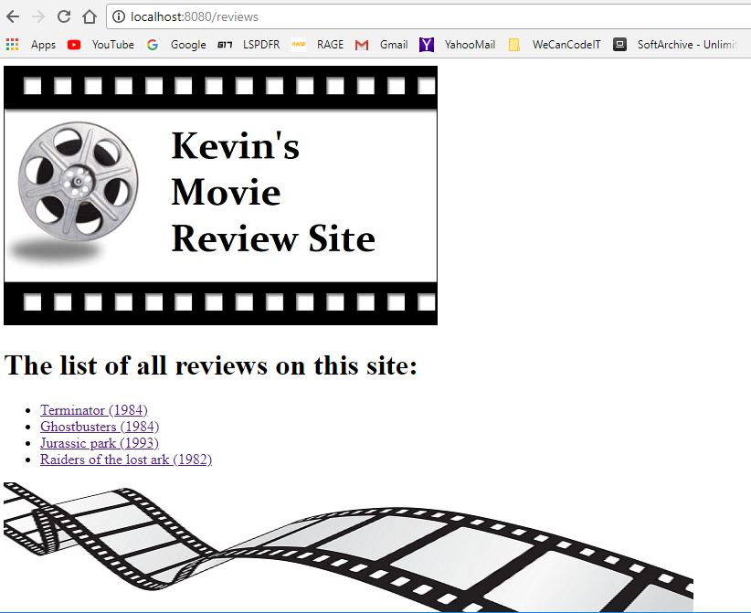

This is the first project after week one. We learned the basics of Java which we used to create a Fortune Teller program that asks for several pieces of information to generate a fun fortune.
 This is the second project after week two. We learned more of the basics of Java which we used to create a digi-pet © type program that allows the user to adopt a pet and take care of it.
This is the third project after week three. We learned more advanced items of Java. This expanded on the previous weeks project expanding it to a shelter full of pets instead of one. With it you can take care fo several functions.
 This is the forth project after week four. We learned more advanced aspects of Java. This project also expands on the previous one by adding more functions and classes to care for both organic and robotic pets.
This is the fifth project after week five. We now moved to front end training. This is the review site that was our first HTML design site.
